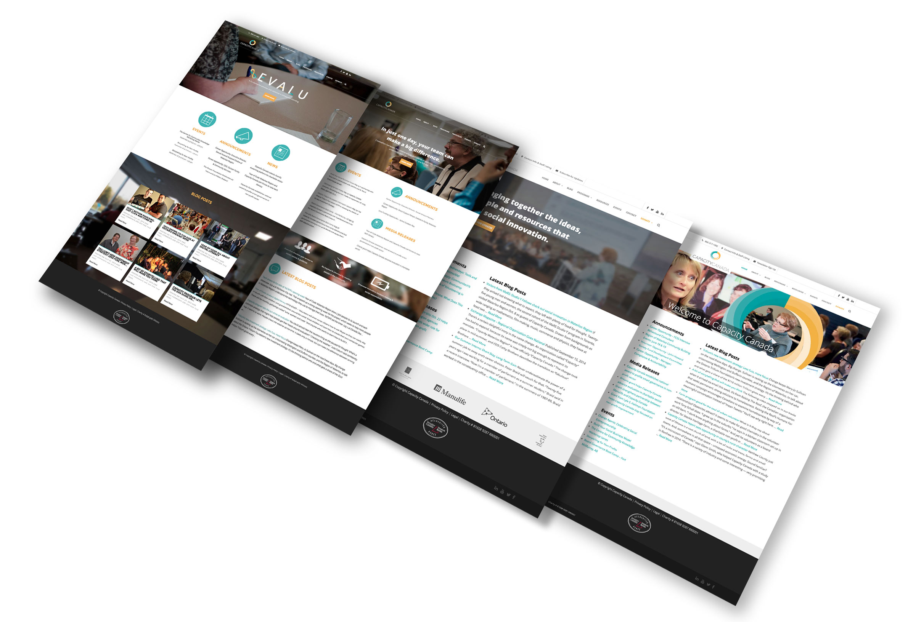
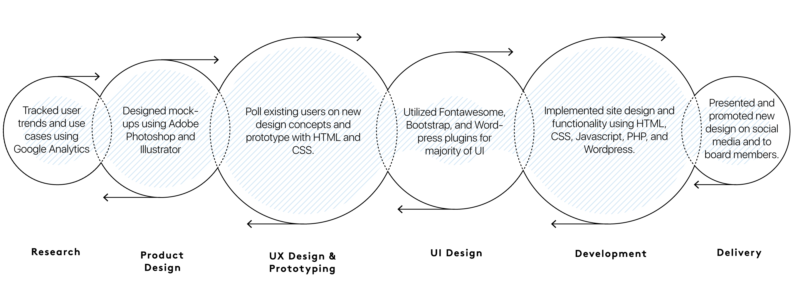

UX Designer & Front-End Developer
A website for the modern non-profit.Capacity Canada is a non-profit organization that aids in the development of other non-profit initiatives. When I began the summer at Capacity I was a Digital Media Assistant. In my spare time I decided to re-design a mockup of their website. After one peek over my shoulder, I became a Graphic Designer. Soon after I was entrusted with the full implementation and design of Capacity's web ecosystem as a UX Designer & Front-End Developer.
CapacityCanada.ca
This was a 2 month project to re-design and implement a new website ecosystem for Capacity Canada. After the re-design process traffic to the site has increased by 30%.
You can navigate the site here: Capacity Canada
A crucial factor during the design process was the use case. The majority of Capacity's visitors were older professionals, ones who had visited the site before. This means we had to adapt to a new image while maintaining brand integrity. In the end the goal is not tools, trends, techniques, or designer happiness. The goal is the user. Each step in this design and implementation process was made with that at the forefront.
Design Process
Year of Code
Year of Code Waterloo Region is an initiative supported by Capacity Canada. Their goal is to increase tech literacy in the Waterloo region by introducing people of all ages to coding. It is a year long campaign that I have had the pleasure of volunteering with thanks to Capacity Canada.

Learn more about Year of Code here: Year of Code Waterloo